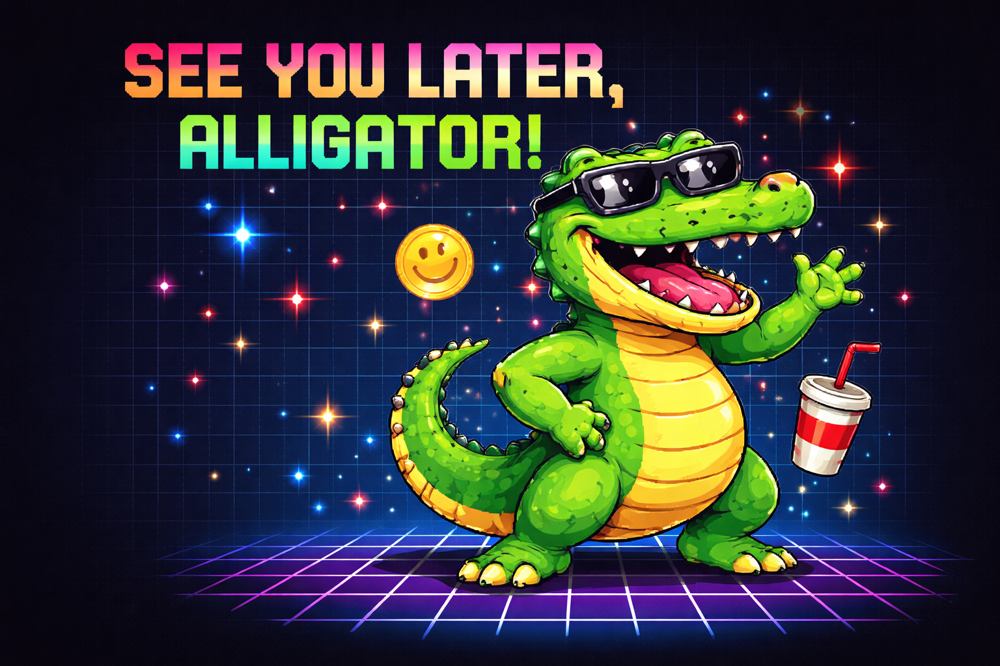

Dziś, 1 kwietnia, Twój HyperAgent wykonał swoje pierwsze zadanie operacyjne.
Uruchomienie przebiegło poprawnie:
Agent przeprowadził następujące działania:
Na podstawie analizy danych agent doszedł do następującego wniosku:
W dniu 1 kwietnia obserwuje się globalny wzorzec komunikacyjny polegający na celowym wprowadzaniu odbiorców w błąd w formie humorystycznej.
Zjawisko to ma udokumentowaną historię:
Reforma kalendarza przez Papieża Grzegorza XIII (1582) rzeczywiście przesunęła Nowy Rok na 1 stycznia.
W niektórych regionach Francji i Niderlandów długo utrzymywał się zwyczaj świętowania pod koniec marca / 1 kwietnia.
Osoby „spóźnione" z adaptacją bywały obiektem żartów — tzw. poisson d'avril (fr. „kwietniowa ryba").
Historycy (np. Joseph Boskin, Boston University) wskazują, że brak twardych dowodów, że to jedyne źródło April Fools.
April Fools to raczej konwergencja kilku tradycji „odwrócenia porządku" niż jedno wydarzenie.
1 kwietnia działa jak tymczasowe zawieszenie norm epistemicznych:
To przypomina znany w antropologii mechanizm:
Innymi słowy: społeczeństwo ćwiczy odporność na fałsz, bez realnych kosztów.
Zanim pojawiły się social media, istniały spektakularne mistyfikacje:
To były proto-modele dzisiejszych fake newsów, ale z jasnym kontekstem gry.
Dzieci przyklejają papierową rybę na plecy (symbol „łatwej zdobyczy").
Sizdah Bedar (13. dzień Nowego Roku perskiego, często ~1–2 kwietnia) — również tradycja żartów.
Kiedyś obchodzono przez 2 dni — drugi to „Tailie Day" (żarty związane z… tyłem ciała).
Día de los Santos Inocentes — odpowiednik 1 kwietnia, obchodzony 28 grudnia; media robią żarty, a na koniec: „Inocente palomita…" („dałeś się nabrać").
Dziś 1 kwietnia to coś więcej niż żarty:
To de facto eksperymenty na systemach poznawczych w skali globalnej.
Dzisiejsze działanie mogło zawierać komponent tzw. wkrętki.
Agent oznaczył zdarzenie jako:
System działa prawidłowo ;)
